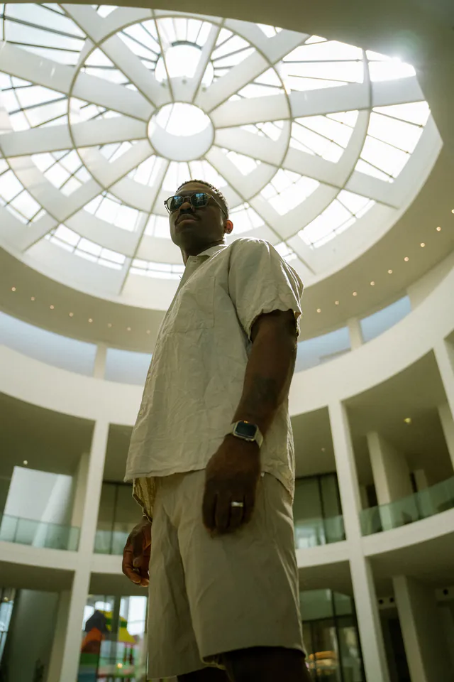

DJ in München
Benji Holiday legt dort auf, wo er zu Hause ist: München. Vom Eisbach bis zur Clubnacht kennt er die Stadt und ihren Sound — für Hochzeiten, Firmenfeiern und Openings, die in Erinnerung bleiben.
Resident-Erfahrung: Rote Sonne · Bob Beaman · Harry Klein

Ein DJ, der München wirklich kennt
Benji Holiday ist in München aufgewachsen und hat hier seine musikalische Heimat. Seine ersten Auftritte reichen vom Rewe Family Sommerfest bis zu Open-Mic-Nächten im Bahnwärter Thiel; als DJ stand er in Clubs wie der Roten Sonne, dem Bob Beaman und dem Harry Klein hinter den Decks. Diese Bandbreite — von handgemachtem Soul bis zu tanzbarer Clubmusik — bringt er auf jedes Event in der Stadt.
Ob elegante Hochzeit in einer Villa am Starnberger Umland, Firmenfeier in einer Eventlocation in der Innenstadt oder Store-Opening in der Maximilianstraße: Benji liest den Raum und die Gäste, statt eine starre Playlist abzuspielen. Er baut den Abend als Dramaturgie auf — ruhige Grooves zum Empfang, ansteigende Energie zum Dinner, Peak-Time auf dem Dancefloor.
Beliebte Anlässe in München
In einer Stadt voller Kulturszene, Agenturen und Gastronomie ist die Bandbreite groß: Hochzeiten in Schloss- und Seelocations rund um München, Sommerfeste und Weihnachtsfeiern von Unternehmen, Produkt-Launches, Gallery-Openings und private Geburtstage. Für jeden dieser Anlässe stimmt Benji Musikauswahl, Lautstärke und Übergänge individuell ab — inklusive Wunschsongs und No-Go-Liste.
Faire, klare Preise
Detaillierte Aufschlüsselung auf der DJ-Übersicht.
DJ in München — gut zu wissen
Was kostet ein DJ in München?
Feste Pakete statt Stundensätze: DJ Experience ab 899 € netto (bis 5 Std. inkl. Equipment & Mikrofon), Fashion & Brand Event ab 1.000 € (Anfahrt im Raum München inklusive), Premium Brand Experience ab 1.500 €. Du bekommst vorab ein festes Gesamtangebot.
Bringt Benji eigene Technik mit?
Auf Wunsch ja. Je nach Location und Gästezahl stimmen wir Anlage, Mischpult und Licht vorab ab, damit der Sound im Raum sitzt.
Wie früh sollte ich anfragen?
Gerade für Hochzeiten und die Firmenfeier-Saison im Dezember lohnt eine frühe Anfrage. Kurzfristig ist je nach Termin oft trotzdem etwas möglich — einfach fragen.